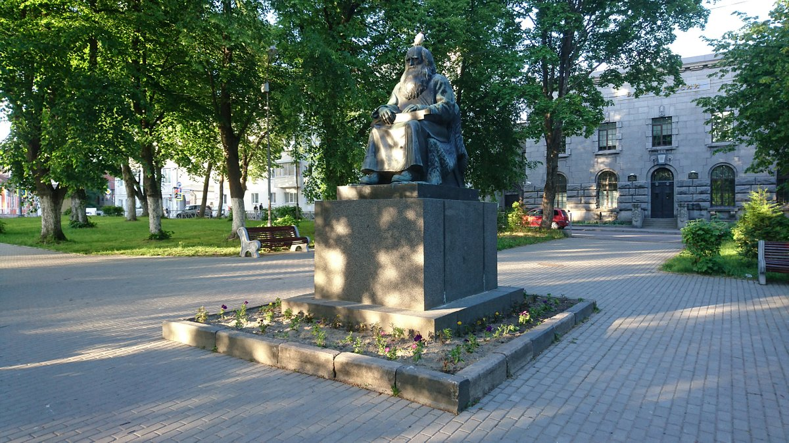

Памятник рунопевцу
Памятник Рунопевцу — значимый символ Сортавалы и всей Карелии, отражающий глубокие культурные и исторические корни региона. Этот монумент посвящен древним карельским рунопевцам, которые передавали легенды и истории народа из поколения в поколение с помощью магических песнопений — рун.